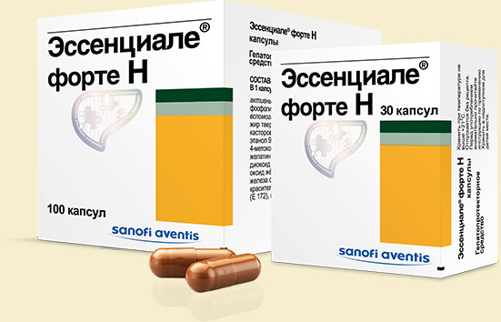
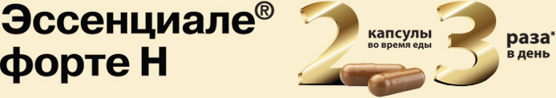

Все заболевания печени сопровождаются повреждением мембран гепатоцитов. Поэтому лекарственная терапия при патологии печени включает препараты, оказывающие восстанавливающее действие на мембраны, препятствующие развитию фиброза и окислительного стресса. Эссенциальные фосфолипиды (ЭФЛ), входящие в состав препарата Эссенциале® форте Н, обладают мембраностабилизирующим, антиоксидантным и антифибротическим действием. (рассмотрено в экспериментальной модели).

ЭФЛ — это высокоочищенный растительный экстракт, получаемый из бобов сои. Они содержат особое активное действующее вещество - фосфатидилхолин, являющийся источником полиненасыщенных жирных кислот. Молекулы фосфатидилхолина встраиваются в фосфолипидную структуру поврежденных печеночных клеток, замещая дефекты и восстанавливая функции мембран (рассмотрено в экспериментальной модели).
Эссенциальные фосфолипиды Эссенциале® форте Н
- способствуют восстановлению клеток печени (рассмотрено в экспериментальной модели)
- оказывают нормализующее действие на метаболизм липидов и белков
- включены в стандарты лечения различных заболеваний печени
Эссенциале® форте Н
- 9 из 10 пользователей высоко оценивают эффект Эссенциале® форте Н
- Препарат №1 среди гепатопротекторов в России
- Производится в соответствии со стандартами GMP
- Содержит ЭФЛ высокой степени очистки
- Действие подтверждено клиническими исследованиями
